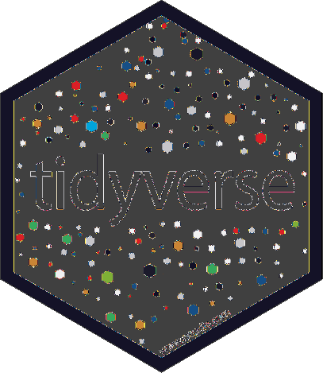

Interfaces y paquetes útiles en R y Python para el estadístico y el actuario
- Marite Marques Escobar
- Odalis Deyanira Rodriguez Clemente
- Johanna Elsirenny Alvarez Sanabria
- José Julián Villalba Vasquez
Paquetería en R y Python
¿Porqué usar paquetes?
- Aumentar las capacidades del lenguaje
- Para ahorrarnos trabajo
- ¿Si ya esta hecho para que hacerlo de nuevo?
- Seguramente alguien lo hizo mejor

La Red de Archivo Compresivo de R (CRAN en
inglés) es el principal repositorio de código de R, desde donde
descargar paquetería.
Instalación de paquetes en R
# Instala tidyverse
install.packages("tidyverse")
# Importa tidyverse
library(tidyverse)
De forma similar existe el
Indice de Paquetes de Python
abreviado PiPy en ingles.
Instalación de paquetes en Python
¿Instalación global, PyEnv o Conda?


Paquetes útiles de Python

Una herramienta de análisis y manipulación de datos rápida,
poderosa, flexible y fácil de usar
import pandas as pd
df2 = pd.DataFrame({
"A": 1.0,
"B": pd.Timestamp("20130102"),
"C": pd.Series(1, index=list(range(4)), dtype="float32"),
"D": np.array([3] * 4, dtype="int32"),
"E": pd.Categorical(["test", "train", "test", "train"]),
"F": "foo",
})
df2
Out[11]:
A B C D E F
0 1.0 2013-01-02 1.0 3 test foo
1 1.0 2013-01-02 1.0 3 train foo
2 1.0 2013-01-02 1.0 3 test foo
3 1.0 2013-01-02 1.0 3 train foo

Una librería para hacer gráficos interactivos listos para
publicación.
import plotly.express as px
df = px.data.gapminder().query("country=='Canada'")
fig = px.line(df, x="year", y="lifeExp", title='Life expectancy in Canada')
fig.show()


Una librería que provee algoritmos para optimización integración,
interpolación, problemas de autovalores, ecuaciones algebraicas,
ecuaciones diferenciales, estadísticas y muchos otras más.
Paquetes útiles de R

Una colección de paquetes con criterios comunes de R diseñada
para la ciencia de datos, todos los paquetes que la componen
comparten filosofía, gramática y estructuras de datos.
-
 Manipulación de datos
Manipulación de datos
-
Carga de datos
-
Una mejor tabla de datos
-
Creación de gráficos

RMarkdown es una herramienta para convertir tus
análisis en documento, reportes, presentaciones y tableros de
alta calidad.

¿Qué es LaTeX?
Un sistema de composición de textos, orientado a la creación de documentos escritos que presenten una alta calidad tipográfica. Por sus características y posibilidades, es usado especialmente en la creación de textos científicos.Documento de latex
\documentclass[10pt]{article}
\begin{document}
Hola mundo
\end{document}
Expresión en latex
\documentclass{standalone}
\begin{document}
\begin{equation}
\int_{a}^{b} f(x) \; dx
= \lim _{n \to \infty}
\frac{b-a}{n}
\sum_{k=1}^{n} f \left( a+k \; {\frac {b-a}{n}} \right).
\end{equation}
\end{document}
Expresión en latex

Interfaz de linea de comandos
LaTeX cuenta con diversas opciones para ser utilizado desde
consola con utilidades como pdflatex,
latexmk entre tantas otras, sin embargo esto
puede resultar tedioso y por tanto pueden preferir otras
alternativas

TexMaker es un editor de código abierto,
multiplataforma, que integra muchas herramientas necesarias para
desarrollar documentos con LaTeX, en una sola aplicación

Un editor de LaTeX de fácil uso. Online y sin instalación, con
capacidades de edición en tiempo real, sistema de control de
versiones y muchas plantillas predefinidas